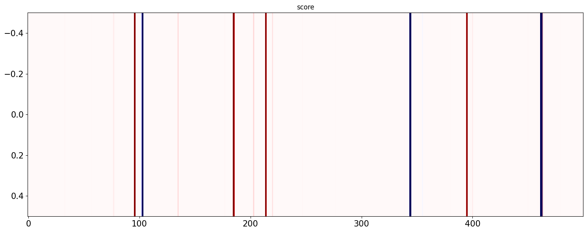

Loop with several UQ Predictors
Aim to show and test several UQ baseline approachs implement as UQEstimators UQEstimators can be wrapped witthin a UQModels that also can include a Non-UQ predictor.
[3]:
import ipykernel
import uqmodels
import xgboost
import os
import numpy as np
path = '.'
storing = path + '/data/'
Preprocessing
[4]:
import uqmodels.processing as proc
import uqmodels.preprocessing.Custom_Preprocessor as preproc
from uqmodels.processing import Data_loader
from uqmodels.processing import Pipeline
from uqmodels.preprocessing.Custom_Preprocessor import dict_to_TS_Dataset
from copy import deepcopy
#Data loading & Preprocessing
filename = 'synthetic_dataset.p'
# Instanciate Data_loader
data_loader = Data_loader()
# Apply data_loader to get rowdata
dict_data = data_loader.load({'storing':storing,'keys':[filename]})
preprocessor = dict_to_TS_Dataset()
pipeline = Pipeline(data_loader=data_loader,list_processors=[preprocessor])
#Define query link to load api and add a 'name' key which is recover by the preprocessor to provide a name to the dataset
list_query = [{'storing':storing,'keys':[filename],'name':'Synthetic_data'}]
#It provide a data_generator (yield) that provide each processed data one by one.
dataset_generator = pipeline.transform(list_query)
# Execute preprocessing pipeline :
X, y, sample_weight, x_split, context, objective, name = next(dataset_generator)
train = x_split==1
test = np.invert(train)
print('X shape:',X.shape,'y: yshape',y.shape,'Name:',name)
#Mask for visualisation graphics
f_obs= np.arange(len(y))[test][0:500]
Pipeline : No cache data found : load data and execute the whole pipeline
X shape: (9600, 21) y: yshape (9600, 1) Name: Synthetic_data
Evaluation function
[5]:
import uqmodels.evaluation.base_metrics as base_metrics
from sklearn.metrics import mean_squared_error
def print_metrics(y,y_pred,y_pred_lower,y_pred_upper,train,test):
if not(y_pred is None):
print('MSE TRAIN:',np.round(base_metrics.mean_squared_error(y[train],y_pred[train]),2),
'MSE TEST:',np.round(base_metrics.mean_squared_error(y[test],y_pred[test]),2))
else:
print('Prediction without Mean')
if not(y_pred_lower is None):
print('Coverage TRAIN:',np.round(base_metrics.average_coverage(y[train],y_pred_lower[train],y_pred_upper[train]),2),
'Coverage TEST:',np.round(base_metrics.average_coverage(y[test],y_pred_lower[test],y_pred_upper[test]),2))
print('ACE TRAIN:',np.round(base_metrics.ace(y[train],y_pred_lower[train],y_pred_upper[train],alpha),2),
'ACE TEST:',np.round(base_metrics.ace(y[test],y_pred_lower[test],y_pred_upper[test],alpha),2))
print('Sharpness TRAIN:',np.round(base_metrics.sharpness(y_pred_lower[train],y_pred_upper[train]),2),
'Sharpness TEST:',np.round(base_metrics.sharpness(y_pred_lower[test],y_pred_upper[test]),2))
else :
print('Prediction without PIs')
Base estimator
[7]:
from xgboost import XGBRegressor
from sklearn.ensemble import GradientBoostingRegressor,RandomForestRegressor
# base regressor
model_gbr = GradientBoostingRegressor()
model_rf = RandomForestRegressor()
# Target miscoverage :
alpha = 0.05
import json
with open("model_parameters/grid_param_gbr.json") as json_file:
gbr_config = json.load(json_file)
# Processing to update entries with integers where needed
for key, entry in gbr_config.items():
if (type(entry) is float) and (gbr_config[key] == int(entry)):
gbr_config[key] = int(entry)
# Model with best hp configuration
import json
with open("model_parameters/grid_param_rf.json") as json_file:
rf_config = json.load(json_file)
# Processing to update entries with integers where needed
for key, entry in rf_config.items():
if (type(entry) is float) and (rf_config[key] == int(entry)):
rf_config[key] = int(entry)
# Model with best hp configuration
n_greedsearch = 10
Specification of UQ_Estimators to test
[8]:
import uqmodels.modelization.UQEstimator as UQ_esti
import uqmodels.postprocessing.UQ_processing as UQ_proc
import uqmodels.visualization.visualization as visu
import uqmodels.evaluation.metrics as metrics
import uqmodels.modelization.ML_estimator.baseline as baseline
from uqmodels.modelization.ML_estimator.random_forest_UQ import RF_UQEstimator,get_params_dict
alpha= 0.1
# PI model based on Gaussian process regression
list_UQEstimator_initialisers = []
list_UQEstimator_parameters = []
list_params_tunning=[]
# PIs models based on ML regression UQ (with sigma and 2sigma gaussian hypothesis)
for type_UQ in ['var']:
list_UQEstimator_initialisers.append(UQ_esti.MeanVarUQEstimator)
list_UQEstimator_parameters.append({'estimator':model_gbr,'estimator_var':model_rf,'type_UQ':type_UQ})
# Quantile base predictor
list_quantile_estimators = []
list_quantile_estimators.append(GradientBoostingRegressor(random_state=0, loss='quantile', alpha=0.05))
list_quantile_estimators.append(GradientBoostingRegressor(random_state=0, loss='quantile', alpha=0.5))
list_quantile_estimators.append(GradientBoostingRegressor(random_state=0, loss='quantile', alpha=0.95))
for type_UQ in ['quantile','res_quantile']:
list_UQEstimator_initialisers.append(UQ_esti.QuantileUQEstimator)
list_UQEstimator_parameters.append({'list_estimators':list_quantile_estimators,
'list_alpha':[0.05,0.5,0.95],
'type_UQ':type_UQ})
# PI model based on Gaussian process regression
list_UQEstimator_initialisers.append(baseline.GPR_UQEstimator)
list_UQEstimator_parameters.append({'drop_ratio':0.95})
# PIs models based on ML regression UQ (with sigma and 2sigma gaussian hypothesis)
for type_UQ in ['var','2var','res_var','res_2var']:
estimator = deepcopy(model_gbr)
print(estimator)
list_UQEstimator_initialisers.append(baseline.REGML_UQEstimator)
list_UQEstimator_parameters.append({'estimator':estimator,
'estimator_var':deepcopy(estimator),
'type_UQ':type_UQ})
# PI model based on Grandient boosting quantile regression
for type_UQ in ['quantile','res_quantile']:
estimator=deepcopy(model_gbr)
list_UQEstimator_initialisers.append(baseline.GBRQ_UQEstimator)
list_UQEstimator_parameters.append({'list_alpha':[0.05,0.5,0.95],
'type_UQ':type_UQ})
# PIs models based on RF_UQ UQ (with sigma, 2sigma and empirique hypothesis)
for type_UQ in ['var','2var','quantile','var_A&E','res_var','res_2var','res_quantile']:
dict_params = get_params_dict(beta=0.1,var_min=0.0001,n_estimators=75,max_depth=12,type_UQ=type_UQ)
list_UQEstimator_initialisers.append(RF_UQEstimator)
list_UQEstimator_parameters.append(dict_params)
GradientBoostingRegressor()
GradientBoostingRegressor()
GradientBoostingRegressor()
GradientBoostingRegressor()
Traning & Inference of UQ-Estimators + KPI_processors
[9]:
import uqmodels.postprocessing.UQKPI_Processor as UQProc
for intialiser,parameters in zip(list_UQEstimator_initialisers,list_UQEstimator_parameters):
estimator = intialiser(**parameters)
print(estimator.name,estimator.type_UQ)
pred_model_train = 0
pred_model = 0
if(estimator.type_UQ is not False):
if('res' in estimator.type_UQ):
model_gbr.fit(X[train],y[train])
pred_model = np.squeeze(model_gbr.predict(X))
pred_model_train = np.squeeze(pred_model[train])
y_train = (np.squeeze(y[train])-pred_model_train).reshape(y[train].shape)
estimator.fit(X[train], y_train)
(pred,UQ) = estimator.predict(X)
# Ensure good shape
pred = (np.squeeze(pred) + pred_model).reshape(pred.shape)
# Call to processing UQ:var or 2var to PIs
PIs_processor = UQProc.NormalPIs_processor(KPI_parameters={"list_alpha": [0.05,0.95]})
Anom_processor = UQProc.Anomscore_processor(KPI_parameters={"beta": 0.005,"d": 2})
if(estimator.type_UQ in ['var','res_var']):
UQ_train = UQ[train]
elif(estimator.type_UQ in ['res_quantile','quantile','var_A&E','res_2var','2var']):
UQ_train = UQ[:,train]
# Execution of fit and transform procedure of PI_KPI_processor
PIs_params_ = PIs_processor.fit(UQ=UQ_train,
type_UQ=estimator.type_UQ,pred=pred[train],
type_UQ_params=estimator.type_UQ_params,y=None)
(y_pred_lower,y_pred_upper) = PIs_processor.transform(UQ=UQ,type_UQ=estimator.type_UQ,
pred=pred,type_UQ_params=estimator.type_UQ_params,
y=None)
# Execution of fit and predict of Anom_KPI_processor
Anom_params_ = Anom_processor.fit(UQ=UQ_train,
type_UQ=estimator.type_UQ,
pred=pred[train],y=y[train],
type_UQ_params=estimator.type_UQ_params)
anom_score = Anom_processor.transform(UQ=UQ,
type_UQ=estimator.type_UQ,
pred=pred,y=y,
type_UQ_params=estimator.type_UQ_params)
print_metrics(y,pred,y_pred_lower,y_pred_upper,train,test)
visu.plot_pi(
y,
pred,
y_pred_lower,
y_pred_upper,
mode_res=False,
f_obs = f_obs,
name = 'Prediction with uncertainty',
size = (15, 6))
visu.plot_pi(
y,
pred,
y_pred_lower,
y_pred_upper,
mode_res=True,
f_obs = f_obs,
name = 'Residuals with uncertainty',
size = (15, 6))
visu.plot_anom_matrice(score=anom_score,true_label=None,f_obs=f_obs,vmin=-4,vmax=4)
del(estimator)
del(anom_score)
MeanVarUQEstimator var
C:\FONDATION\Support_composants\env-uqmodels\lib\site-packages\sklearn\ensemble\_gb.py:424: DataConversionWarning: A column-vector y was passed when a 1d array was expected. Please change the shape of y to (n_samples, ), for example using ravel().
y = column_or_1d(y, warn=True)
C:\FONDATION\Support_composants\env-uqmodels\lib\site-packages\sklearn\base.py:1151: DataConversionWarning: A column-vector y was passed when a 1d array was expected. Please change the shape of y to (n_samples,), for example using ravel().
return fit_method(estimator, *args, **kwargs)
warning y shape : (8229, 1) pred shape (8229,)
warning y shape : (9600, 1) pred shape (9600,)
MSE TRAIN: 0.14 MSE TEST: 0.17
Coverage TRAIN: 0.31 Coverage TEST: 0.33
ACE TRAIN: -0.59 ACE TEST: -0.57
Sharpness TRAIN: 1.0 Sharpness TEST: 1.1
QuantileUQEstimator quantile
C:\FONDATION\Support_composants\env-uqmodels\lib\site-packages\sklearn\ensemble\_gb.py:424: DataConversionWarning: A column-vector y was passed when a 1d array was expected. Please change the shape of y to (n_samples, ), for example using ravel().
y = column_or_1d(y, warn=True)
C:\FONDATION\Support_composants\env-uqmodels\lib\site-packages\sklearn\ensemble\_gb.py:424: DataConversionWarning: A column-vector y was passed when a 1d array was expected. Please change the shape of y to (n_samples, ), for example using ravel().
y = column_or_1d(y, warn=True)
C:\FONDATION\Support_composants\env-uqmodels\lib\site-packages\sklearn\ensemble\_gb.py:424: DataConversionWarning: A column-vector y was passed when a 1d array was expected. Please change the shape of y to (n_samples, ), for example using ravel().
y = column_or_1d(y, warn=True)
recover quantile
recover quantile
warning y shape : (8229, 1) pred shape (8229,)
warning y shape : (9600, 1) pred shape (9600,)
MSE TRAIN: 0.16 MSE TEST: 0.19
Coverage TRAIN: 0.37 Coverage TEST: 0.37
C:\FONDATION\Support_composants\env-uqmodels\lib\site-packages\uqmodels\postprocessing\UQ_processing.py:663: RuntimeWarning: divide by zero encountered in divide
res_norm[~mask, dim] = res_norm[~mask, dim] / (sigma)
C:\FONDATION\Support_composants\env-uqmodels\lib\site-packages\numpy\lib\function_base.py:4527: RuntimeWarning: invalid value encountered in subtract
diff_b_a = subtract(b, a)
ACE TRAIN: -0.53 ACE TEST: -0.53
Sharpness TRAIN: 1.21 Sharpness TEST: 1.23

QuantileUQEstimator res_quantile
C:\FONDATION\Support_composants\env-uqmodels\lib\site-packages\sklearn\ensemble\_gb.py:424: DataConversionWarning: A column-vector y was passed when a 1d array was expected. Please change the shape of y to (n_samples, ), for example using ravel().
y = column_or_1d(y, warn=True)
C:\FONDATION\Support_composants\env-uqmodels\lib\site-packages\sklearn\ensemble\_gb.py:424: DataConversionWarning: A column-vector y was passed when a 1d array was expected. Please change the shape of y to (n_samples, ), for example using ravel().
y = column_or_1d(y, warn=True)
C:\FONDATION\Support_composants\env-uqmodels\lib\site-packages\sklearn\ensemble\_gb.py:424: DataConversionWarning: A column-vector y was passed when a 1d array was expected. Please change the shape of y to (n_samples, ), for example using ravel().
y = column_or_1d(y, warn=True)
C:\FONDATION\Support_composants\env-uqmodels\lib\site-packages\sklearn\ensemble\_gb.py:424: DataConversionWarning: A column-vector y was passed when a 1d array was expected. Please change the shape of y to (n_samples, ), for example using ravel().
y = column_or_1d(y, warn=True)
recover quantile
recover quantile
warning y shape : (8229, 1) pred shape (8229,)
warning y shape : (9600, 1) pred shape (9600,)
MSE TRAIN: 0.13 MSE TEST: 0.17
Coverage TRAIN: 0.31 Coverage TEST: 0.3
ACE TRAIN: -0.59 ACE TEST: -0.6
Sharpness TRAIN: 1.0 Sharpness TEST: 1.0
Gaussian_Process_UQ var
C:\FONDATION\Support_composants\env-uqmodels\lib\site-packages\sklearn\gaussian_process\kernels.py:419: ConvergenceWarning: The optimal value found for dimension 0 of parameter k1__k1__k1__k2__alpha is close to the specified lower bound 1e-05. Decreasing the bound and calling fit again may find a better value.
warnings.warn(
warning y shape : (8229, 1) pred shape (8229,)
warning y shape : (9600, 1) pred shape (9600,)
MSE TRAIN: 0.25 MSE TEST: 0.3
Coverage TRAIN: 0.43 Coverage TEST: 0.44
ACE TRAIN: -0.47 ACE TEST: -0.46
Sharpness TRAIN: 1.3 Sharpness TEST: 1.35
REGML_UQEstimator_var var
C:\FONDATION\Support_composants\env-uqmodels\lib\site-packages\sklearn\ensemble\_gb.py:424: DataConversionWarning: A column-vector y was passed when a 1d array was expected. Please change the shape of y to (n_samples, ), for example using ravel().
y = column_or_1d(y, warn=True)
C:\FONDATION\Support_composants\env-uqmodels\lib\site-packages\sklearn\ensemble\_gb.py:424: DataConversionWarning: A column-vector y was passed when a 1d array was expected. Please change the shape of y to (n_samples, ), for example using ravel().
y = column_or_1d(y, warn=True)
C:\FONDATION\Support_composants\env-uqmodels\lib\site-packages\sklearn\ensemble\_gb.py:424: DataConversionWarning: A column-vector y was passed when a 1d array was expected. Please change the shape of y to (n_samples, ), for example using ravel().
y = column_or_1d(y, warn=True)
warning y shape : (8229, 1) pred shape (8229,)
warning y shape : (9600, 1) pred shape (9600,)
MSE TRAIN: 0.12 MSE TEST: 0.17
Coverage TRAIN: 0.3 Coverage TEST: 0.3
ACE TRAIN: -0.6 ACE TEST: -0.6
Sharpness TRAIN: 0.83 Sharpness TEST: 0.83
REGML_UQEstimator_2var 2var
C:\FONDATION\Support_composants\env-uqmodels\lib\site-packages\sklearn\ensemble\_gb.py:424: DataConversionWarning: A column-vector y was passed when a 1d array was expected. Please change the shape of y to (n_samples, ), for example using ravel().
y = column_or_1d(y, warn=True)
C:\FONDATION\Support_composants\env-uqmodels\lib\site-packages\sklearn\ensemble\_gb.py:424: DataConversionWarning: A column-vector y was passed when a 1d array was expected. Please change the shape of y to (n_samples, ), for example using ravel().
y = column_or_1d(y, warn=True)
C:\FONDATION\Support_composants\env-uqmodels\lib\site-packages\sklearn\ensemble\_gb.py:424: DataConversionWarning: A column-vector y was passed when a 1d array was expected. Please change the shape of y to (n_samples, ), for example using ravel().
y = column_or_1d(y, warn=True)
C:\FONDATION\Support_composants\env-uqmodels\lib\site-packages\sklearn\ensemble\_gb.py:424: DataConversionWarning: A column-vector y was passed when a 1d array was expected. Please change the shape of y to (n_samples, ), for example using ravel().
y = column_or_1d(y, warn=True)
warning y shape : (8229, 1) pred shape (8229,)
Naïf approach mean of 2 sigma
warning y shape : (9600, 1) pred shape (9600,)
Naïf approach mean of 2 sigma
MSE TRAIN: 0.12 MSE TEST: 0.17
Coverage TRAIN: 0.32 Coverage TEST: 0.31
ACE TRAIN: -0.58 ACE TEST: -0.59
Sharpness TRAIN: 0.98 Sharpness TEST: 1.0
REGML_UQEstimator_res_var res_var
C:\FONDATION\Support_composants\env-uqmodels\lib\site-packages\sklearn\ensemble\_gb.py:424: DataConversionWarning: A column-vector y was passed when a 1d array was expected. Please change the shape of y to (n_samples, ), for example using ravel().
y = column_or_1d(y, warn=True)
C:\FONDATION\Support_composants\env-uqmodels\lib\site-packages\sklearn\ensemble\_gb.py:424: DataConversionWarning: A column-vector y was passed when a 1d array was expected. Please change the shape of y to (n_samples, ), for example using ravel().
y = column_or_1d(y, warn=True)
C:\FONDATION\Support_composants\env-uqmodels\lib\site-packages\sklearn\ensemble\_gb.py:424: DataConversionWarning: A column-vector y was passed when a 1d array was expected. Please change the shape of y to (n_samples, ), for example using ravel().
y = column_or_1d(y, warn=True)
C:\FONDATION\Support_composants\env-uqmodels\lib\site-packages\sklearn\ensemble\_gb.py:424: DataConversionWarning: A column-vector y was passed when a 1d array was expected. Please change the shape of y to (n_samples, ), for example using ravel().
y = column_or_1d(y, warn=True)
warning y shape : (8229, 1) pred shape (8229,)
warning y shape : (9600, 1) pred shape (9600,)
MSE TRAIN: 0.1 MSE TEST: 0.17
Coverage TRAIN: 0.28 Coverage TEST: 0.28
ACE TRAIN: -0.62 ACE TEST: -0.62
Sharpness TRAIN: 0.78 Sharpness TEST: 0.79
REGML_UQEstimator_res_2var res_2var
C:\FONDATION\Support_composants\env-uqmodels\lib\site-packages\sklearn\ensemble\_gb.py:424: DataConversionWarning: A column-vector y was passed when a 1d array was expected. Please change the shape of y to (n_samples, ), for example using ravel().
y = column_or_1d(y, warn=True)
C:\FONDATION\Support_composants\env-uqmodels\lib\site-packages\sklearn\ensemble\_gb.py:424: DataConversionWarning: A column-vector y was passed when a 1d array was expected. Please change the shape of y to (n_samples, ), for example using ravel().
y = column_or_1d(y, warn=True)
C:\FONDATION\Support_composants\env-uqmodels\lib\site-packages\sklearn\ensemble\_gb.py:424: DataConversionWarning: A column-vector y was passed when a 1d array was expected. Please change the shape of y to (n_samples, ), for example using ravel().
y = column_or_1d(y, warn=True)
C:\FONDATION\Support_composants\env-uqmodels\lib\site-packages\sklearn\ensemble\_gb.py:424: DataConversionWarning: A column-vector y was passed when a 1d array was expected. Please change the shape of y to (n_samples, ), for example using ravel().
y = column_or_1d(y, warn=True)
C:\FONDATION\Support_composants\env-uqmodels\lib\site-packages\sklearn\ensemble\_gb.py:424: DataConversionWarning: A column-vector y was passed when a 1d array was expected. Please change the shape of y to (n_samples, ), for example using ravel().
y = column_or_1d(y, warn=True)
warning y shape : (8229, 1) pred shape (8229,)
Naïf approach mean of 2 sigma
warning y shape : (9600, 1) pred shape (9600,)
Naïf approach mean of 2 sigma
MSE TRAIN: 0.1 MSE TEST: 0.17
Coverage TRAIN: 0.3 Coverage TEST: 0.29
ACE TRAIN: -0.6 ACE TEST: -0.61
Sharpness TRAIN: 0.92 Sharpness TEST: 0.93

GBRQ_UQEstimator quantile
C:\FONDATION\Support_composants\env-uqmodels\lib\site-packages\sklearn\ensemble\_gb.py:424: DataConversionWarning: A column-vector y was passed when a 1d array was expected. Please change the shape of y to (n_samples, ), for example using ravel().
y = column_or_1d(y, warn=True)
C:\FONDATION\Support_composants\env-uqmodels\lib\site-packages\sklearn\ensemble\_gb.py:424: DataConversionWarning: A column-vector y was passed when a 1d array was expected. Please change the shape of y to (n_samples, ), for example using ravel().
y = column_or_1d(y, warn=True)
C:\FONDATION\Support_composants\env-uqmodels\lib\site-packages\sklearn\ensemble\_gb.py:424: DataConversionWarning: A column-vector y was passed when a 1d array was expected. Please change the shape of y to (n_samples, ), for example using ravel().
y = column_or_1d(y, warn=True)
recover quantile
recover quantile
warning y shape : (8229, 1) pred shape (8229,)
warning y shape : (9600, 1) pred shape (9600,)
MSE TRAIN: 0.16 MSE TEST: 0.19
Coverage TRAIN: 0.37 Coverage TEST: 0.37
C:\FONDATION\Support_composants\env-uqmodels\lib\site-packages\uqmodels\postprocessing\UQ_processing.py:663: RuntimeWarning: divide by zero encountered in divide
res_norm[~mask, dim] = res_norm[~mask, dim] / (sigma)
C:\FONDATION\Support_composants\env-uqmodels\lib\site-packages\numpy\lib\function_base.py:4527: RuntimeWarning: invalid value encountered in subtract
diff_b_a = subtract(b, a)
ACE TRAIN: -0.53 ACE TEST: -0.53
Sharpness TRAIN: 1.2 Sharpness TEST: 1.22
GBRQ_UQEstimator res_quantile
C:\FONDATION\Support_composants\env-uqmodels\lib\site-packages\sklearn\ensemble\_gb.py:424: DataConversionWarning: A column-vector y was passed when a 1d array was expected. Please change the shape of y to (n_samples, ), for example using ravel().
y = column_or_1d(y, warn=True)
C:\FONDATION\Support_composants\env-uqmodels\lib\site-packages\sklearn\ensemble\_gb.py:424: DataConversionWarning: A column-vector y was passed when a 1d array was expected. Please change the shape of y to (n_samples, ), for example using ravel().
y = column_or_1d(y, warn=True)
C:\FONDATION\Support_composants\env-uqmodels\lib\site-packages\sklearn\ensemble\_gb.py:424: DataConversionWarning: A column-vector y was passed when a 1d array was expected. Please change the shape of y to (n_samples, ), for example using ravel().
y = column_or_1d(y, warn=True)
C:\FONDATION\Support_composants\env-uqmodels\lib\site-packages\sklearn\ensemble\_gb.py:424: DataConversionWarning: A column-vector y was passed when a 1d array was expected. Please change the shape of y to (n_samples, ), for example using ravel().
y = column_or_1d(y, warn=True)
recover quantile
recover quantile
warning y shape : (8229, 1) pred shape (8229,)
warning y shape : (9600, 1) pred shape (9600,)
MSE TRAIN: 0.13 MSE TEST: 0.17
Coverage TRAIN: 0.31 Coverage TEST: 0.3
ACE TRAIN: -0.59 ACE TEST: -0.6
Sharpness TRAIN: 1.0 Sharpness TEST: 1.0
RF_UQEstimator var
C:\FONDATION\Support_composants\env-uqmodels\lib\site-packages\sklearn\base.py:1151: DataConversionWarning: A column-vector y was passed when a 1d array was expected. Please change the shape of y to (n_samples,), for example using ravel().
return fit_method(estimator, *args, **kwargs)
MSE TRAIN: 0.07 MSE TEST: 0.17
Coverage TRAIN: 1.0 Coverage TEST: 0.94
ACE TRAIN: 0.1 ACE TEST: 0.04
Sharpness TRAIN: 1.16 Sharpness TEST: 1.25
RF_UQEstimator 2var
C:\FONDATION\Support_composants\env-uqmodels\lib\site-packages\sklearn\base.py:1151: DataConversionWarning: A column-vector y was passed when a 1d array was expected. Please change the shape of y to (n_samples,), for example using ravel().
return fit_method(estimator, *args, **kwargs)
Naïf approach mean of 2 sigma
Naïf approach mean of 2 sigma
MSE TRAIN: 0.07 MSE TEST: 0.17
Coverage TRAIN: 0.76 Coverage TEST: 0.62
ACE TRAIN: -0.14 ACE TEST: -0.28
Sharpness TRAIN: 0.49 Sharpness TEST: 0.49
RF_UQEstimator quantile
C:\FONDATION\Support_composants\env-uqmodels\lib\site-packages\sklearn\base.py:1151: DataConversionWarning: A column-vector y was passed when a 1d array was expected. Please change the shape of y to (n_samples,), for example using ravel().
return fit_method(estimator, *args, **kwargs)
recover quantile
recover quantile
MSE TRAIN: 0.07 MSE TEST: 0.17
Coverage TRAIN: 0.79 Coverage TEST: 0.71
ACE TRAIN: -0.11 ACE TEST: -0.19
Sharpness TRAIN: 0.64 Sharpness TEST: 0.64

RF_UQEstimator var_A&E
C:\FONDATION\Support_composants\env-uqmodels\lib\site-packages\sklearn\base.py:1151: DataConversionWarning: A column-vector y was passed when a 1d array was expected. Please change the shape of y to (n_samples,), for example using ravel().
return fit_method(estimator, *args, **kwargs)
MSE TRAIN: 0.07 MSE TEST: 0.17
Coverage TRAIN: 1.0 Coverage TEST: 0.95
ACE TRAIN: 0.1 ACE TEST: 0.05
Sharpness TRAIN: 1.19 Sharpness TEST: 1.27
RF_UQEstimator res_var
C:\FONDATION\Support_composants\env-uqmodels\lib\site-packages\sklearn\ensemble\_gb.py:424: DataConversionWarning: A column-vector y was passed when a 1d array was expected. Please change the shape of y to (n_samples, ), for example using ravel().
y = column_or_1d(y, warn=True)
C:\FONDATION\Support_composants\env-uqmodels\lib\site-packages\sklearn\base.py:1151: DataConversionWarning: A column-vector y was passed when a 1d array was expected. Please change the shape of y to (n_samples,), for example using ravel().
return fit_method(estimator, *args, **kwargs)
MSE TRAIN: 0.08 MSE TEST: 0.16
Coverage TRAIN: 0.97 Coverage TEST: 0.92
ACE TRAIN: 0.07 ACE TEST: 0.02
Sharpness TRAIN: 1.12 Sharpness TEST: 1.15
RF_UQEstimator res_2var
C:\FONDATION\Support_composants\env-uqmodels\lib\site-packages\sklearn\ensemble\_gb.py:424: DataConversionWarning: A column-vector y was passed when a 1d array was expected. Please change the shape of y to (n_samples, ), for example using ravel().
y = column_or_1d(y, warn=True)
C:\FONDATION\Support_composants\env-uqmodels\lib\site-packages\sklearn\base.py:1151: DataConversionWarning: A column-vector y was passed when a 1d array was expected. Please change the shape of y to (n_samples,), for example using ravel().
return fit_method(estimator, *args, **kwargs)
Naïf approach mean of 2 sigma
Naïf approach mean of 2 sigma
MSE TRAIN: 0.08 MSE TEST: 0.17
Coverage TRAIN: 0.8 Coverage TEST: 0.73
ACE TRAIN: -0.1 ACE TEST: -0.17
Sharpness TRAIN: 0.64 Sharpness TEST: 0.64
RF_UQEstimator res_quantile
C:\FONDATION\Support_composants\env-uqmodels\lib\site-packages\sklearn\ensemble\_gb.py:424: DataConversionWarning: A column-vector y was passed when a 1d array was expected. Please change the shape of y to (n_samples, ), for example using ravel().
y = column_or_1d(y, warn=True)
C:\FONDATION\Support_composants\env-uqmodels\lib\site-packages\sklearn\base.py:1151: DataConversionWarning: A column-vector y was passed when a 1d array was expected. Please change the shape of y to (n_samples,), for example using ravel().
return fit_method(estimator, *args, **kwargs)
recover quantile
recover quantile
MSE TRAIN: 0.08 MSE TEST: 0.17
Coverage TRAIN: 0.94 Coverage TEST: 0.83
ACE TRAIN: 0.04 ACE TEST: -0.07
Sharpness TRAIN: 0.86 Sharpness TEST: 0.86
Test for KPI_parameters
[10]:
# set of KPI parameters to test
dict_NormalPIs_processor_0 = {'list_alpha':[0.025,0.16,0.84,0.975],'with_epistemic':True}
dict_NormalPIs_processor_1 = {'list_alpha':[0.025,0.975],'with_epistemic':False}
Epistemicscorelvl_0 = {'mode':"score",'list_percent':[0.50, 0.80, 0.95, 0.98, 0.995, 1]}
Epistemicscorelvl_1 = {'mode':"levels",'list_percent':[0.10, 0.50, 0.90]}
dict_Anom1_processor_0 = {'beta':0.1,'mode':'score','fusion':False,'type_fusion':'mahalanobis','type_norm':'Nsigma_local','q_var':2}
dict_Anom2_processor_0 = {'beta':0.1,'mode':'born','fusion':True,'type_fusion':'mean','type_norm':'Nsigma_local','q_var':2}
dict_Anom1_processor_1 = {'beta':0.05,'mode':'score','fusion':False,'type_fusion':'mahalanobis','type_norm':'chebyshev_local','q_var':0.1}
dict_Anom2_processor_1 = {'beta':0.05,'mode':'born','fusion':True,'type_fusion':'mean','type_norm':'chebyshev_global','q_var':0.1}
dict_Anom1_processor_2 = {'beta':0.2,'mode':'score','fusion':False,'type_fusion':'mahalanobis','type_norm':'Cantelli_local','q_var':0.1}
dict_Anom2_processor_2 = {'beta':0.2,'mode':'born','fusion':True,'type_fusion':'mean','type_norm':'Cantelli_global','q_var':0.1}
dict_Anom1_processor_3 = {'beta':0.005,'mode':'score','fusion':False,'type_fusion':'mahalanobis','type_norm':'quantiles_local','q_var':0.1}
dict_Anom2_processor_3 = {'beta':0.005,'mode':'born','fusion':True,'type_fusion':'mean','type_norm':'quantiles_global','q_var':0.1,'q_Eratio':2}
dict_Anom1_processor_4 = {'beta':0.0005,'mode':'score','fusion':False,'type_fusion':'mahalanobis','type_norm':'Chi2','q_var':0.1,'q_var_e':0}
dict_Anom2_processor_4 = {'beta':0.0005,'mode':'born','fusion':True,'type_fusion':'mean','type_norm':'Chi2','q_var':0.1,'k_var_e':0}
list_KPI_parameters = [[dict_NormalPIs_processor_0,Epistemicscorelvl_0,dict_Anom1_processor_0,dict_Anom2_processor_0],
[dict_NormalPIs_processor_1,Epistemicscorelvl_1,dict_Anom1_processor_1,dict_Anom2_processor_1],
[dict_NormalPIs_processor_0,Epistemicscorelvl_1,dict_Anom1_processor_2,dict_Anom2_processor_2],
[dict_NormalPIs_processor_1,Epistemicscorelvl_0,dict_Anom1_processor_3,dict_Anom2_processor_3],
[dict_NormalPIs_processor_0,Epistemicscorelvl_0,dict_Anom1_processor_4,dict_Anom2_processor_4]]
# We can also create a more complexe UQmodel that handle several UQKPI_Processor to build at inference (UQMesure, Predictive interval and model unreliability score) and after observation (Anomaly score)
# Specification of the UQestimator
from uqmodels.UQModel import UQModel
import uqmodels.postprocessing.UQKPI_Processor as UQProc
for n,(KPI_params_Normal,KPI_params_Epistemic,KPI_params_Anom1,KPI_params_Anom2) in enumerate(list_KPI_parameters):
UQEstimator_initializer = RF_UQEstimator
RF = RandomForestRegressor(min_samples_leaf=5,n_estimators=50,max_depth=10,ccp_alpha=0.0005,max_samples=0.7)
UQEstimator_parameters = {'estimator':RF,'var_min':0.002,'type_UQ':'var_A&E','rescale':True,'random_state':0}
# Instanciation of PostProcesseur that provide UQ measure.
UQ_proc = UQProc.UQKPI_Processor(KPI_parameters={'pred_and_UQ':n==0})
# PostProcesseur that compute Predictive intervals
PIs_proc = UQProc.NormalPIs_processor(KPI_parameters=KPI_params_Normal)
# PostProcesseur that compute an epistemics lvl score
Elvl_proc = UQProc.Epistemicscorelvl_processor(KPI_parameters=KPI_params_Epistemic)
# PostProcesseur Instanciation that compute an epistemics lvl score
Anom_proc1 = UQProc.Anomscore_processor(KPI_parameters=KPI_params_Anom1)
Anom_proc2 = UQProc.Anomscore_processor(KPI_parameters=KPI_params_Anom2)
# Instanciation of the UQmodel modeling pipeline
RF_UQModel = UQModel(UQEstimator_initializer,
UQEstimator_parameters,
name='UQModels',
predictor=None,
list_predict_KPI_processors=[UQ_proc,PIs_proc,Elvl_proc],
list_score_KPI_processors=[Anom_proc1,Anom_proc2],
cache_manager=None)
# Fit procedure
RF_UQModel.fit(X[train],y[train])
# Inference procedure that provide prediction plus the specified UQKPIs
pred,(UQ,PIs,Elvl) = RF_UQModel.predict(X)
# Score procedure that provide ANom-KPI
KPI_anom1,KPI_anom2 = RF_UQModel.score(X,y)
print('Done run ',n)
C:\FONDATION\Support_composants\env-uqmodels\lib\site-packages\sklearn\base.py:1151: DataConversionWarning: A column-vector y was passed when a 1d array was expected. Please change the shape of y to (n_samples,), for example using ravel().
return fit_method(estimator, *args, **kwargs)
Done run 0
C:\FONDATION\Support_composants\env-uqmodels\lib\site-packages\sklearn\base.py:1151: DataConversionWarning: A column-vector y was passed when a 1d array was expected. Please change the shape of y to (n_samples,), for example using ravel().
return fit_method(estimator, *args, **kwargs)
Done run 1
C:\FONDATION\Support_composants\env-uqmodels\lib\site-packages\sklearn\base.py:1151: DataConversionWarning: A column-vector y was passed when a 1d array was expected. Please change the shape of y to (n_samples,), for example using ravel().
return fit_method(estimator, *args, **kwargs)
Done run 2
C:\FONDATION\Support_composants\env-uqmodels\lib\site-packages\sklearn\base.py:1151: DataConversionWarning: A column-vector y was passed when a 1d array was expected. Please change the shape of y to (n_samples,), for example using ravel().
return fit_method(estimator, *args, **kwargs)
Done run 3
C:\FONDATION\Support_composants\env-uqmodels\lib\site-packages\sklearn\base.py:1151: DataConversionWarning: A column-vector y was passed when a 1d array was expected. Please change the shape of y to (n_samples,), for example using ravel().
return fit_method(estimator, *args, **kwargs)
Done run 4
[ ]:
[ ]:
[ ]: